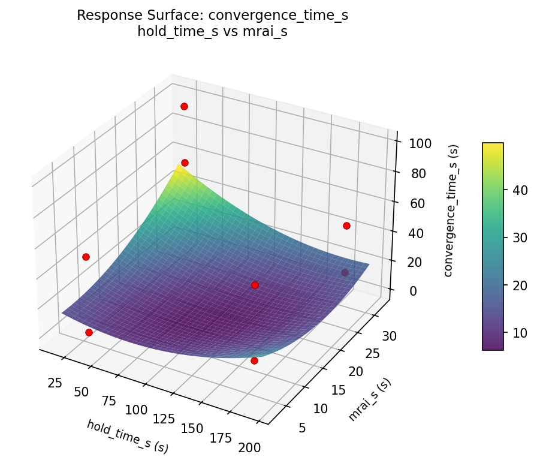
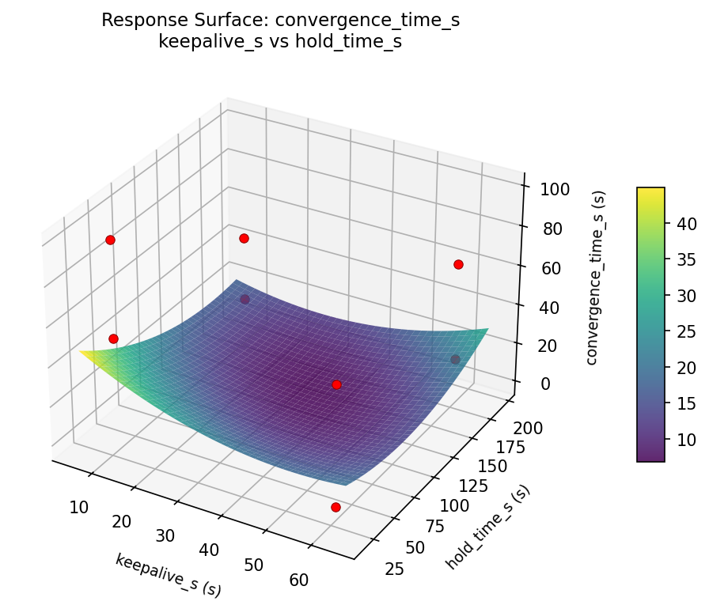
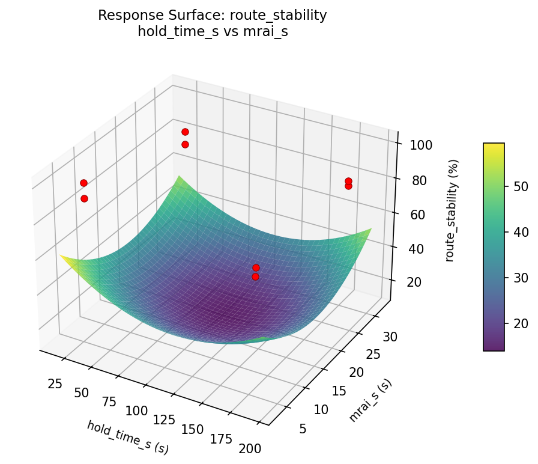
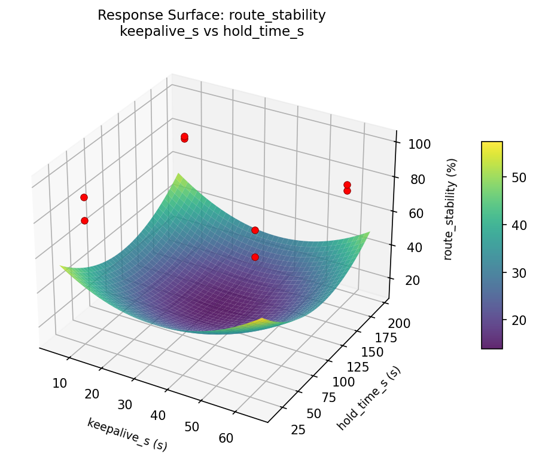
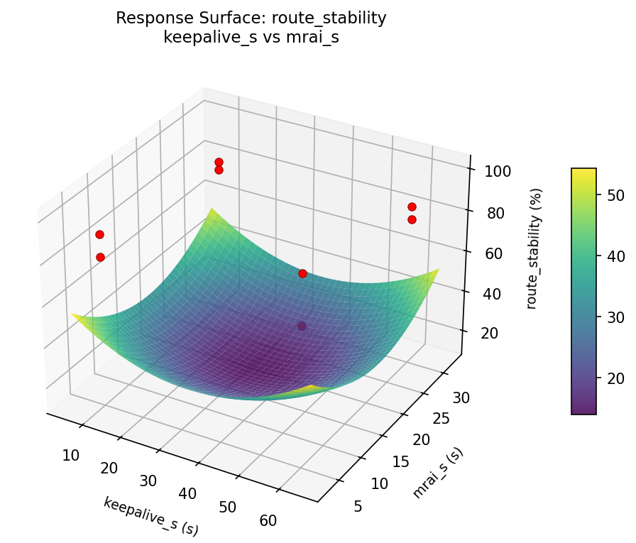

Experimental Setup
Factors
| Factor | Low | High | Unit |
|---|---|---|---|
keepalive_s | 10 | 60 | s |
hold_time_s | 30 | 180 | s |
mrai_s | 5 | 30 | s |
dampening | off | on | |
bfd | off | on |
Fixed: as_count = 50, topology = partial_mesh
Responses
| Response | Direction | Unit |
|---|---|---|
convergence_time_s | ↓ minimize | s |
route_stability | ↑ maximize | % |
Configuration
use_cases/51_bgp_route_convergence/config.json
{
"metadata": {
"name": "BGP Route Convergence",
"description": "Fractional factorial of 5 BGP timer and dampening parameters for convergence speed"
},
"factors": [
{
"name": "keepalive_s",
"levels": [
"10",
"60"
],
"type": "continuous",
"unit": "s"
},
{
"name": "hold_time_s",
"levels": [
"30",
"180"
],
"type": "continuous",
"unit": "s"
},
{
"name": "mrai_s",
"levels": [
"5",
"30"
],
"type": "continuous",
"unit": "s"
},
{
"name": "dampening",
"levels": [
"off",
"on"
],
"type": "categorical",
"unit": ""
},
{
"name": "bfd",
"levels": [
"off",
"on"
],
"type": "categorical",
"unit": ""
}
],
"fixed_factors": {
"as_count": "50",
"topology": "partial_mesh"
},
"responses": [
{
"name": "convergence_time_s",
"optimize": "minimize",
"unit": "s"
},
{
"name": "route_stability",
"optimize": "maximize",
"unit": "%"
}
],
"settings": {
"operation": "fractional_factorial",
"test_script": "use_cases/51_bgp_route_convergence/sim.sh"
}
}
Step-by-Step Workflow
1
Preview the design
Terminal
$ python doe.py info --config use_cases/51_bgp_route_convergence/config.json
2
Generate the runner script
Terminal
$ python doe.py generate --config use_cases/51_bgp_route_convergence/config.json \
--output use_cases/51_bgp_route_convergence/results/run.sh --seed 42
3
Execute the experiments
Terminal
$ bash use_cases/51_bgp_route_convergence/results/run.sh
4
Analyze results
Terminal
$ python doe.py analyze --config use_cases/51_bgp_route_convergence/config.json
5
Get optimization recommendations
Terminal
$ python doe.py optimize --config use_cases/51_bgp_route_convergence/config.json
6
Generate the HTML report
Terminal
$ python doe.py report --config use_cases/51_bgp_route_convergence/config.json \
--output use_cases/51_bgp_route_convergence/results/report.html
Features Exercised
| Feature | Value |
|---|---|
| Design type | fractional_factorial |
| Factor types | categorical, continuous |
| Arg style | double-dash |
| Responses | 2 (convergence_time_s ↓, route_stability ↑) |
| Total runs | 8 |
Analysis Results
Generated from actual experiment runs using the DOE Helper Tool.
Pareto Charts
pareto convergence time s

pareto route stability

Main Effects
main effects convergence time s

main effects route stability

Response Surfaces
rsm convergence time s hold time s vs mrai s

rsm convergence time s keepalive s vs hold time s

rsm convergence time s keepalive s vs mrai s

rsm route stability hold time s vs mrai s

rsm route stability keepalive s vs hold time s

rsm route stability keepalive s vs mrai s

Full Analysis Output
doe analyze
=== Main Effects: convergence_time_s ===
Factor Effect Std Error % Contribution
--------------------------------------------------------------
keepalive_s 47.7250 11.4450 48.4%
mrai_s 24.2250 11.4450 24.6%
hold_time_s -18.1250 11.4450 18.4%
dampening -7.3750 11.4450 7.5%
bfd 1.0750 11.4450 1.1%
=== Interaction Effects: convergence_time_s ===
Factor A Factor B Interaction % Contribution
------------------------------------------------------------------------
hold_time_s dampening -47.7250 23.7%
mrai_s bfd -47.7250 23.7%
keepalive_s bfd -24.2250 12.0%
hold_time_s mrai_s -18.3250 9.1%
dampening bfd -18.3250 9.1%
keepalive_s dampening 18.1250 9.0%
hold_time_s bfd 9.1250 4.5%
mrai_s dampening 9.1250 4.5%
keepalive_s hold_time_s 7.3750 3.7%
keepalive_s mrai_s -1.0750 0.5%
=== Summary Statistics: convergence_time_s ===
keepalive_s:
Level N Mean Std Min Max
------------------------------------------------------------
10 4 20.5000 21.4086 -0.3000 50.5000
60 4 68.2250 21.6409 48.3000 98.9000
hold_time_s:
Level N Mean Std Min Max
------------------------------------------------------------
180 4 53.4250 34.1732 16.0000 98.9000
30 4 35.3000 32.5313 -0.3000 65.0000
mrai_s:
Level N Mean Std Min Max
------------------------------------------------------------
30 4 32.2500 29.7418 -0.3000 65.0000
5 4 56.4750 34.1950 15.8000 98.9000
dampening:
Level N Mean Std Min Max
------------------------------------------------------------
off 4 48.0500 22.2151 16.0000 65.0000
on 4 40.6750 43.7645 -0.3000 98.9000
bfd:
Level N Mean Std Min Max
------------------------------------------------------------
off 4 43.8250 44.8675 -0.3000 98.9000
on 4 44.9000 20.7665 15.8000 65.0000
=== Main Effects: route_stability ===
Factor Effect Std Error % Contribution
--------------------------------------------------------------
keepalive_s -7.5000 2.8504 45.7%
bfd -3.3500 2.8504 20.4%
hold_time_s 2.8500 2.8504 17.4%
dampening 2.2000 2.8504 13.4%
mrai_s -0.5000 2.8504 3.0%
=== Interaction Effects: route_stability ===
Factor A Factor B Interaction % Contribution
------------------------------------------------------------------------
hold_time_s bfd -11.2500 20.3%
mrai_s dampening -11.2500 20.3%
hold_time_s dampening 7.5000 13.5%
mrai_s bfd 7.5000 13.5%
hold_time_s mrai_s -4.5000 8.1%
dampening bfd -4.5000 8.1%
keepalive_s mrai_s 3.3500 6.0%
keepalive_s dampening -2.8500 5.1%
keepalive_s hold_time_s -2.2000 4.0%
keepalive_s bfd 0.5000 0.9%
=== Summary Statistics: route_stability ===
keepalive_s:
Level N Mean Std Min Max
------------------------------------------------------------
10 4 87.6750 9.8045 79.2000 100.0000
60 4 80.1750 4.2469 75.7000 85.3000
hold_time_s:
Level N Mean Std Min Max
------------------------------------------------------------
180 4 82.5000 5.9582 77.9000 91.1000
30 4 85.3500 10.5238 75.7000 100.0000
mrai_s:
Level N Mean Std Min Max
------------------------------------------------------------
30 4 84.1750 10.8420 75.7000 100.0000
5 4 83.6750 5.8266 77.9000 91.1000
dampening:
Level N Mean Std Min Max
------------------------------------------------------------
off 4 82.8250 6.7948 75.7000 91.1000
on 4 85.0250 10.1128 77.9000 100.0000
bfd:
Level N Mean Std Min Max
------------------------------------------------------------
off 4 85.6000 10.1275 77.9000 100.0000
on 4 82.2500 6.4511 75.7000 91.1000
Optimization Recommendations
doe optimize
=== Optimization: convergence_time_s ===
Direction: minimize
Best observed run: #7
keepalive_s = 10
hold_time_s = 30
mrai_s = 30
dampening = on
bfd = off
Value: -0.3
RSM Model (linear, R² = 0.9995, Adj R² = 0.9983):
Coefficients:
intercept +44.3625
keepalive_s +13.2375
hold_time_s -4.9875
mrai_s -23.8625
dampening -12.1125
bfd -0.4875
Predicted optimum (from linear model):
keepalive_s = 60
hold_time_s = 30
mrai_s = 5
dampening = off
bfd = off
Predicted value: 99.0500
Model quality: Excellent fit — surface predictions are reliable.
Factor importance:
1. mrai_s (effect: 47.7, contribution: 43.6%)
2. keepalive_s (effect: 26.5, contribution: 24.2%)
3. dampening (effect: -24.2, contribution: 22.1%)
4. hold_time_s (effect: 10.0, contribution: 9.1%)
5. bfd (effect: -1.0, contribution: 0.9%)
=== Optimization: route_stability ===
Direction: maximize
Best observed run: #7
keepalive_s = 10
hold_time_s = 30
mrai_s = 30
dampening = on
bfd = off
Value: 100.0
RSM Model (linear, R² = 0.6551, Adj R² = -0.2071):
Coefficients:
intercept +83.9250
keepalive_s -2.9500
hold_time_s -3.7750
mrai_s +3.7500
dampening +0.2500
bfd +0.4250
Predicted optimum (from linear model):
keepalive_s = 10
hold_time_s = 30
mrai_s = 30
dampening = on
bfd = off
Predicted value: 94.2250
Model quality: Moderate fit — use predictions directionally, not precisely.
Factor importance:
1. hold_time_s (effect: 7.5, contribution: 33.9%)
2. mrai_s (effect: -7.5, contribution: 33.6%)
3. keepalive_s (effect: -5.9, contribution: 26.5%)
4. bfd (effect: 0.8, contribution: 3.8%)
5. dampening (effect: 0.5, contribution: 2.2%)